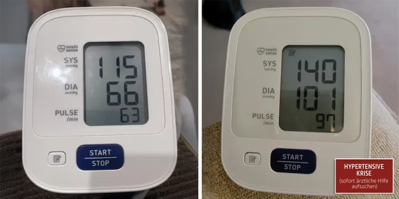
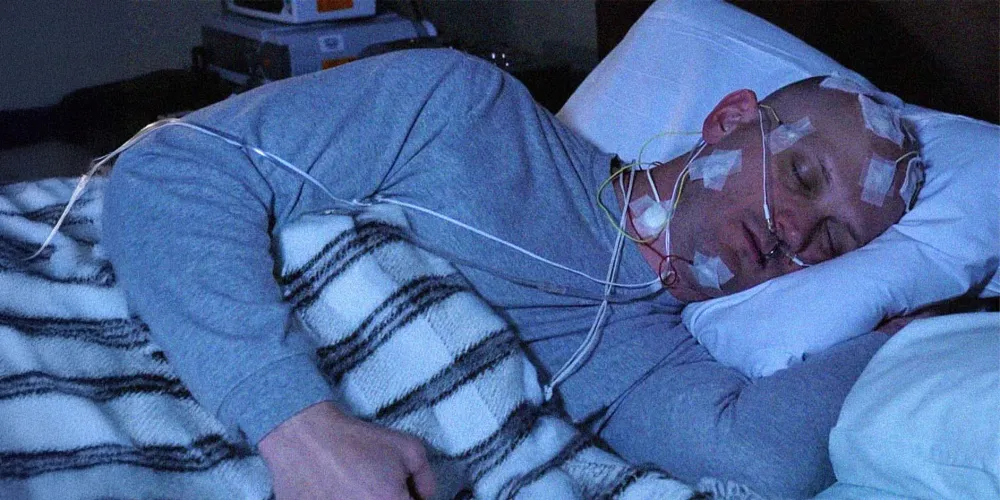
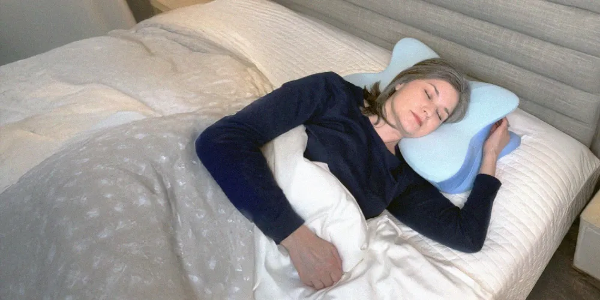
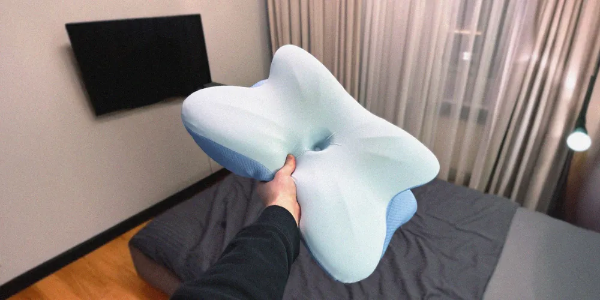
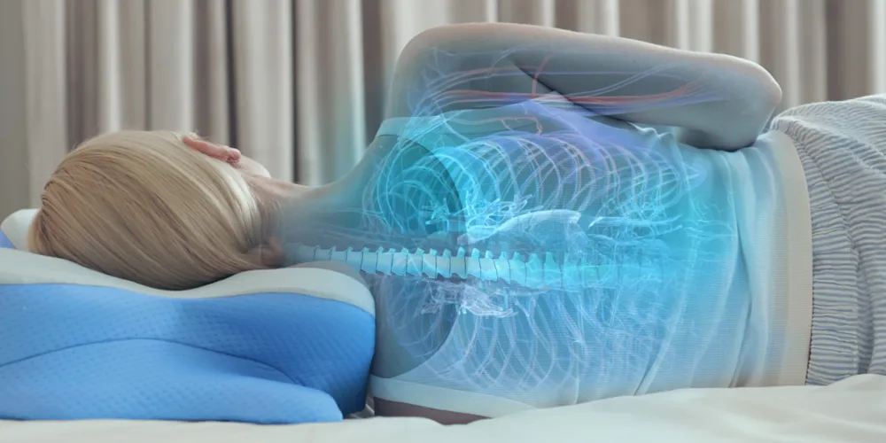
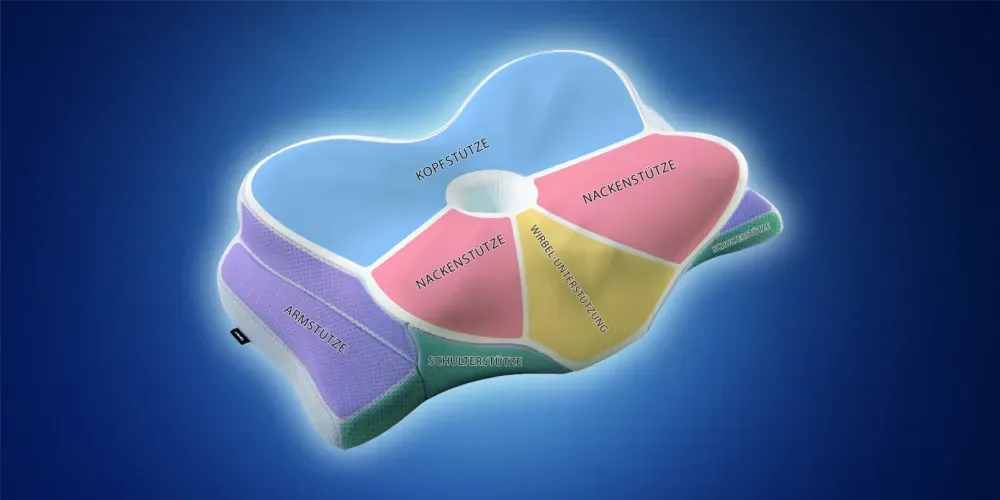
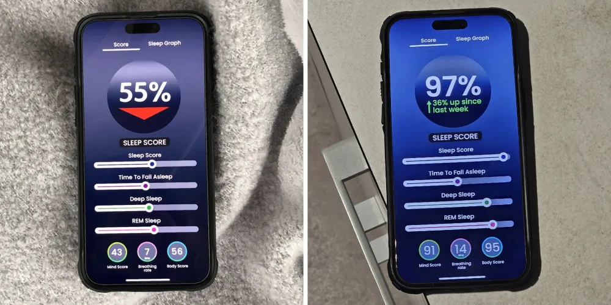
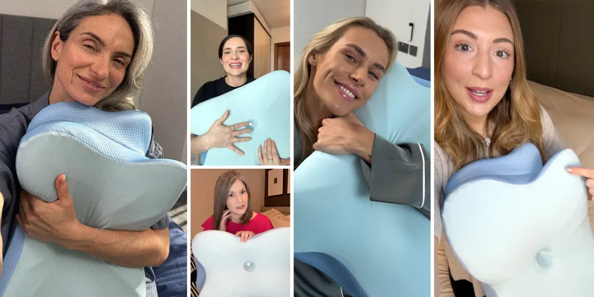

Vom nächtlichen 60-Sekunden-Tod ... zum erholsamen 8-Stunden-Schlaf mit dieser ungewöhnlichen Schmetterlingsmethode
Ein ruhigeres Schlafgefühl beginnt mit einer besseren Ausrichtung
Derila Ergo verbindet ergonomische Unterstützung mit einem minimalistischen Design, das sich leicht, modern und angenehm natürlich anfühlt. Entwickelt für ruhige Nächte, klaren Komfort und eine sichtbar hochwertigere Schlafroutine.
60 Nächte testen · Versand in 2–4 Tagen · Einfach zurücksenden
Der Moment, der alles veränderte
An einem Dezembermorgen wurde klar, dass mein Schlaf nicht nur schlecht, sondern gefährlich war. Der Schock im Badezimmer machte aus einem leisen Problem einen echten Weckruf.
Seit Monaten war der Schlaf kaum erholsam. Das Schnarchen wurde so laut, dass der Partner nachts immer wieder aufwachen musste, und schließlich wurde getrennt geschlafen. Nasenstrips, Kinnriemen und andere Hilfen wurden getestet, aber nichts brachte dauerhaft Verbesserung.
Nach einem Untersuchungstermin kam die Diagnose obstruktive Schlafapnoe: Die Atmung setzte nachts mehrfach aus, weil sich die Muskulatur im Rachen zu stark entspannte und die Atemwege teilweise blockierte. Tagsüber zeigten sich die Folgen deutlich: ständige Müdigkeit, morgendliche Kopfschmerzen, ein vernebeltes Gefühl im Kopf, schlechtere Konzentration und ein steigender Blutdruck.
Zusätzlich wurde erklärt, dass die Schlafposition und vor allem die Ausrichtung von Kopf, Hals und Wirbelsäule eine große Rolle spielen. Wenn der Kopf nachts nicht stabil gestützt ist, können die Atemwege leichter zusammenfallen. Genau deshalb kann die falsche Kissenunterstützung die Beschwerden verschlimmern.

Die „Lösungen“, die alles noch schlimmer machten
Erst kam das CPAP-Gerät. Stellen Sie sich vor, Sie versuchen, mit einem an Ihrem Gesicht festgebundenen Staubsauger zu schlafen. Meine Frau sagte, ich sähe aus wie Darth Vader und Romantik war definitiv nicht möglich.
Die Kinnstreifen und Nasenprodukte waren genauso schlimm. Sie waren nicht nur unbequem, sondern gingen nicht die Grundursache an – meine schlechte Schlafhaltung.
Selbst das Ändern der Schlafposition half nichts. Normale Kissen verloren über Nacht ihre Form, sodass mein Hals nicht gestützt war und meine Atemwege zusammengedrückt wurden. Jeden Morgen wachte ich mit tauben Armen und steifem Nacken nach Luft schnappend auf.
Ich gab Hunderte von Euro für Behandlungen aus, die entweder nicht funktionierten oder mir das Gefühl gaben, statt eines Ehemannes nur Patient zu sein. Da beschloss meine Frau, die Sache selbst in die Hand zu nehmen.
Der Arzt sagte, ich käme als Kandidat für ein Gerät zur Atemunterstützung namens CPAP- oder kontinuierlich positives Atemwegsdruck-Gerät in Frage, das positiven Druck verwendet, um die Atemwege im Schlaf geöffnet zu halten.

Derila Ergo vs. herkömmliche Behandlungen
| Derila Ergo EMPFOHLEN | CPAP-Gerät | Nasenstrips | |
|---|---|---|---|
| Preis | Ab 39€ (–70%) | 500–1.000€ | 5–15€/Monat |
| Rezeptpflichtig | ✓ Nein | ✗ Ja | ✓ Nein |
| Komfort beim Schlafen | ★★★★★ | ★★☆☆☆ | ★★★☆☆ |
| Wirkt ab Nacht 1 | ✓ Sofort | ✗ Eingewöhnung | Teilweise |
| Alle Schlafpositionen | ✓ Ja | ✗ Beschränkt | ✗ Nein |
| Rückgabegarantie | ✓ 60 Nächte | ✗ Keine | ✗ Keine |
| Partnerfreundlich | ✓ Ja | ✗ Nein | ✓ Ja |
Die einfache Lösung, die meine Frau entdeckte
Da entdeckte Julia das Derila Ergo Kissen online. Erst war ich skeptisch – doch sein einzigartiges ergonomisches Design machte mich neugierig. Im Gegensatz zu normalen Kissen verfügt das Derila Ergo über spezielle Stützflügel und einen Schulterbogen, die versprachen, meine Atemwege die ganze Nacht offen zu halten.

Die erste Nacht veränderte alles
Als es ankam, war ich von seinem wissenschaftlichen Design beeindruckt. Die Stützflügel hielten meinen Kopf perfekt und der Schulterbogen sorgte dafür, dass meine Körperhaltung richtig ausgerichtet blieb. Doch der wahre Test sollte das Schlafen darauf sein...
Die erste Nacht war wirklich der Wahnsinn … Der atmungsaktive Schaum hielt mich die ganze Nacht kühl, während die Wirbelsäulen-Ausrichtungstechnologie verhinderte, dass ich mich in diese gefährlichen Schlafpositionen drehte.
Zum ersten Mal seit Monaten schlief ich die ganze Nacht durch.
Am nächsten Morgen konnte Julia es nicht glauben. „Nicht nur, dass du nicht geschnarcht hast“, sagte sie, „aber du hast dich auch kein bisschen herumgewälzt.“ Ich fühlte mich einfach … entspannt, erholt … es war unglaublich.

Meine 30-tägige Reise mit Derila Ergo
Nach einem Tag
Ich wachte auf und fühlte mich wie neugeboren. Kein trockener Mund, keine Kopfschmerzen, und zum ersten Mal seit Monaten fühlte mein Hals sich vollkommen entspannt an. Julia konnte es nicht glauben – sie musste mich im Laufe der Nacht nicht ein einziges Mal anstupsen, damit ich aufhörte zu schnarchen. Das ergonomische Design hielt meine Atemwege auf natürliche Weise die ganze Nacht lang geöffnet. Ich war skeptisch, aber beeindruckt.
Nach einer Woche
Die Transformation war unglaublich. Diese brutalen Energieeinbrüche am Nachmittag? Weg. Ich kämpfte während Meetings oder beim Autofahren nicht mehr gegen das Zufallen meiner Augen an. Mein Arzt war überrascht, dass mein Blutdruck wieder auf normale Werte sank. Selbst meine Körperhaltung wurde besser – keine krummen Schultern oder „Technik-Nacken“ von schlechten Schlafpositionen mehr.
Nach zwei Wochen
Julia und ich schliefen jede Nacht durch. Die Intimität, die wir verloren hatten, kehrte in unsere Beziehung zurück – es ist großartig, was richtige Erholung mit einer Ehe machen kann. Meine Kollegen kommentierten ständig, wie viel fokussierter und fröhlicher ich wirkte.
Einer fragte sogar, ob ich im Urlaub gewesen sei! Die Wahrheit war, dass ich einfach nur endlich den tiefen, erholsamen Schlaf bekam, den mein Körper so dringend gebraucht hatte.
Nach 30 Tagen
Es ist, als hätte ich ein ganz neues Leben entdeckt. Die Symptome der Schlafapnoe, die meine Nächte regierten? Weg. Das Schnarchen, wegen dem meine Frau auf dem Boden schlief? Eine entfernte Erinnerung.
Mein Arzt war von meinem Fortschritt begeistert – nicht nur bei der Schlafapnoe, sondern bei meiner allgemeinen Gesundheit. Und das Beste? Julia und ich sind uns näher als je zuvor. Wir haben sogar unseren ersten Urlaub seit Jahren geplant – jetzt, da wir beide die Energie haben, den zu genießen. Das Ergo hat nicht nur meinen Schlaf in Ordnung gebracht – es hat mir auch das Leben zurückgegeben, von dem ich gedacht hatte, ich hätte es verloren.

Darum funktioniert Derila tatsächlich
Mein Arzt war erst skeptisch – doch nachdem er das fortschrittliche ergonomische Design des Ergo untersucht hatte, begann er, es all seinen Patienten mit Schlafapnoe zu empfehlen. Das hat ihn am meisten beeindruckt:
Die Wissenschaft hinter besserem Schlaf
Im Gegensatz zu normalen Kissen oder einfachem Memory-Schaum wurde das Derila Ergo mit mehreren Stützzonen entwickelt, die zusammenarbeiten, um Auslöser für Schlafapnoe zu eliminieren:
Stützflügel-Technologie
Sie fungieren wie ein sanftes Geländer für den Kopf und halten so die ganze Nacht lang den perfekten Winkel.
Revolutionärer Schulterbogen
Der Bogen umschließt die Schultern auf natürliche Weise und hält dabei die Wirbelsäule perfekt ausgerichtet.
Fortschrittliches Halsstützsystem
Die spezialisierten Zonen helfen, Verspannungen in den kritischen Halsmuskeln während der Nacht zu lösen.
Intelligente Kieferausrichtung
Sie hält das Kinn in der optimalen Position und kann Schnarchen reduzieren.
Strategische Armstütze
Sie sorgt für gesunde Durchblutung und verhindert dabei das Herumwälzen, das Ihren Schlaf stört.

Was meinen Arzt am meisten beeindruckt hat?
Es funktioniert für jede Schlafposition. Egal, ob Sie wie ich Rückenschläfer sind, Seitenschläfer wie meine Frau, oder sogar auf dem Bauch schlafen, Derila sorgt für die korrekte Ausrichtung. Kein Wunder, dass 87% der Benutzer von besserem Schlaf innerhalb der ersten Woche berichten.
Während CPAP-Geräte Luft in Ihre Atemwege zwängen, arbeitet Derila mit der natürlichen Position Ihres Körpers, um sie offen zu halten. Einfach, aber unglaublich effektiv.

Echte Menschen, echte Ergebnisse
Nachdem ich meine Geschichte im Internet geteilt hatte, wurde ich von Nachrichten von anderen Derila-Nutzern überschüttet. Das hat mich am meisten überrascht – es half nicht nur bei Schlafapnoe.
✓ Verifizierter KaufKarin Hansen, NiedersachsenIch bin 67 und meine Arthritis hat das Schlafen zum Albtraum gemacht. In der ersten Nacht mit dem Ergo habe ich tatsächlich bis zum Morgen durchgeschlafen.
✓ Verifizierter KaufJohannes Peters, BrandenburgMein Schnarchen hat fast ganz aufgehört und ich wache ohne diese nagenden Nackenschmerzen auf.
✓ Verifizierter KaufAndrea Gruber, BayernMigräne hat mich schlimm gequält, aber das Derila Kissen war ein Gamechanger!
✓ Verifizierter KaufAmelie Gebert, Baden-WürttembergSeit zwei Monaten: keine Kopfschmerzen mehr und ich fühle mich tatsächlich erholt, wenn ich aufwache.
✓ Verifizierter KaufMichael Krämer, HamburgNichts hat geholfen, bis meine Frau dieses Kissen bestellt hat. Mein Schnarchen ist jetzt im Wesentlichen weg.
✓ Verifizierter KaufStefan Weber, BremenVor Derila wachte ich nachts oft auf. Jetzt schlafe ich unterbrechungsfrei!
Das Angebot, über das Sie nicht nachdenken müssen
Die fortschrittlichen ergonomischen Funktionen des Derila Ergo machen es zu unserer bisher komplexesten Schlaflösung. Während ergonomische Premium-Kissen 200 € oder mehr kosten können, machen wir diese bahnbrechende Technologie für alle zugänglich, die Probleme mit Schlafapnoe haben.
Aktuell gibt es einen speziellen Rabatt von 70% für Leser dieses Artikels. Außerdem bekommen Sie:
- Schneller Versand weltweit
- 60-tägige Rückgabefrist
- Von unabhängiger Seite geprüft und zertifiziert
Zeitlich begrenztes Angebot endet bald
Das Wissen um Derila breitet sich schnell aus. Allein im letzten Monat haben über 10.000 Menschen gewechselt und ihren Schlaf verändert.
Bei diesem aktuellen Neujahrrabatt von 70% gehen die Vorräte schnell zur Neige. Sobald er weg ist, ist er weg – und das gilt auch für diesen Sonderpreis.
Verbringen Sie keine weitere Nacht mit Hin- und Herwälzen. Riskieren Sie nicht Ihre Gesundheit und Ihre Beziehungen.
Klicken Sie auf den nachfolgenden Link, um Ihr Derila Kissen jetzt zu beanspruchen und sich Tausenden anderen anzuschließen, die endlich den Schlaf bekommen, den sie verdienen.
JETZT BESTELLEN!
Lara K.Morgens hatte ich immer zuerst schlimme Nackenschmerzen. Jetzt nicht mehr!
Timo D.Hatte lange Schnarchprobleme. Dank Derila kann meine Frau jetzt friedlich schlafen.
Betrachten Sie es so
- Ein Besuch bei einem Schlafspezialisten: 200 – 300 €
- CPAP-Gerät: 500 – 1.000 €
- Monatliches Zubehör für CPAP: 50 – 100 €
- Termine beim Chiropraktiker für Nackenschmerzen: 70 € pro Sitzung
Die letzten Worte meiner Frau
„Ich hatte vergessen, wie es ist, neben dir zu schlafen, ohne mir Sorgen zu machen.“
Weitere Kommentare
Sabine M.
Das beste Kissen, das ich je
hatte. Ich wache viel entspannter auf.
Sylvia Hubert
Es ist auch noch günstig! Ich
würde sagen, es ist wirklich wichtig, in ein gutes Kissen zu
investieren.
Roman Lehnert
Ein gutes Kissen ist das, das
gut zu Ihrem Kopf und Hals passt. Zum Glück hat mein Bruder mir
Derila empfohlen.
Häufig gestellte Fragen
Das Derila Ergo wurde für alle Schlafpositionen entwickelt – Rückenschläfer, Seitenschläfer und Bauchschläfer. Die ergonomischen Stützflügel und der Schulterbogen passen sich automatisch an Ihre Körperhaltung an und sorgen so für optimale Ausrichtung der Wirbelsäule, egal wie Sie schlafen.
Die meisten Kunden berichten bereits nach der ersten Nacht von einer deutlichen Verbesserung – weniger Schnarchen, weniger Nackenschmerzen und ein erholsameres Aufwachen. Laut unserer internen Umfrage berichten 87% der Nutzer innerhalb der ersten Woche von besserer Schlafqualität.
Kein Problem. Sie haben 60 Nächte Zeit, das Kissen zu testen. Wenn Sie nicht zufrieden sind, können Sie es einfach zurückschicken und erhalten Ihr Geld zurück – ohne Wenn und Aber. Das Angebot gilt, solange die aktuelle Aktion läuft.
Der Versand erfolgt in der Regel innerhalb von 24 Stunden nach Bestellung. Die Lieferzeit beträgt 2–4 Werktage nach Deutschland, Österreich und in die Schweiz.
Ja. Das aktuelle Neujahrsangebot mit 70% Rabatt ist zeitlich stark begrenzt und endet, sobald der Timer abläuft oder der Vorrat ausverkauft ist. Danach gilt wieder der reguläre Preis. Wir empfehlen, schnell zu handeln.
Das Derila Ergo ist kein medizinisches Gerät und ersetzt keine ärztliche Behandlung. Es ist ein ergonomisches Schlafkissen, das durch verbesserte Kopf- und Halsausrichtung dazu beitragen kann, Schnarchen zu reduzieren und die Schlafqualität zu verbessern. Bei einer diagnostizierten obstruktiven Schlafapnoe konsultieren Sie bitte Ihren Arzt.
Dies ist eine Werbung und kein tatsächlicher Nachrichtenartikel, Blog oder Verbraucherschutz-Update.
OFFENLEGUNG DES MARKETINGS: Diese Website ist ein Marktplatz. Der Eigentümer erhält eine Zahlung, wenn ein qualifizierter Lead vermittelt wird, aber das ist auch schon alles.
OFFENLEGUNG DER WERBUNG: Diese Website und die Produkte und Dienstleistungen, auf die auf der Website verwiesen wird, sind Werbemarktplätze. Bei dieser Website handelt es sich um eine Werbung und nicht um eine Nachrichtenpublikation. Alle auf dieser Website verwendeten Fotos von Personen sind Modelle.
Was Leser sagen
Britta Wagner
Hat jemand Derila Kissen ausprobiert? Sind sie gut?
Janna Koch
Ja! Habe zwei von meiner Schwester zu Weihnachten bekommen. So gut geschlafen wie SEIT JAHREN nicht mehr.
Ben Jonas
Höre immer wieder, wie toll Derila ist. Denke, ich werde es mal ausprobieren.